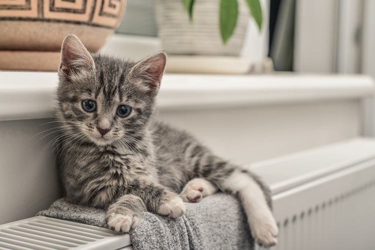

Suite à l'émoi provoqué par la découverte d'une portée de chatons dans la cour de Dauphine,
nous avons pu pousser pour créer notre association au sein de notre chère université.
Le but est simple : prendre en charge des chats abandonnés et proposer à l'adoption des chatons
qui rejoindront votre foyer, étudiant ou non.
Nous sommes donc tous volontaires, de la L1 au M2, pour nous relayer au quotidien et apporter
à nos compagnons le plus d'amour possible. Des membres ponctuels viennent également nous apporter
leur aide de temps à autres, attirés par l'envie de passer une après-midi de révision un chaton sur les genoux !
Nos chatons
Pour le confort de nos locataires, nous ne proposons qu'un nombre
restreint de chatons à l'adoption. Si jamais tous les chats ci-dessous
sont déjà réservés ou bien s'ils ne vous correspondent pas, pas
d'inquiétude ! De nouveaux viendront prendre leur place dans quelques
temps, en fonction du rythme des adoptions et des chats recueillis.
Âge:

Comment adopter ?
Nous vous demanderons de remplir une fiche de renseignements lors de
l’adoption, ainsi que de nous transmettre les justificatifs suivants :
Une pièce d’identité;
Un justificatif de domicile original de moins de 3 mois.
Une participation vous sera demandée, afin de couvrir les frais de
vétérinaire avancés. Comptez 120€ pour un chaton et un chèque de caution
supplémentaire pour la stérilisation si elle n'a pas encore faite.
Contact
Pour toute question, n'hésitez pas à passer nous voir ou bien à nous
contacter via le formulaire ci-dessous. Nous vous répondrons dans les
plus brefs délais !